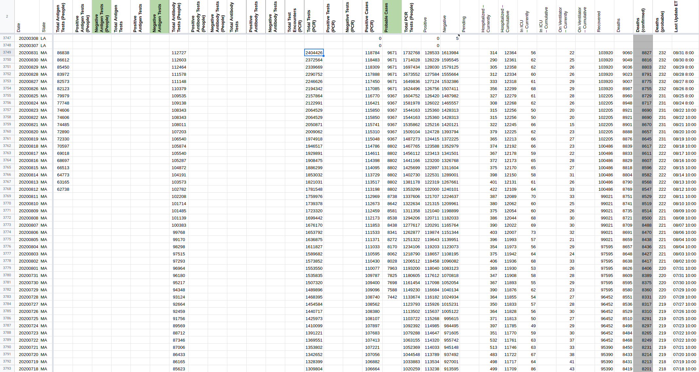

#923: [MA] Update Total tests (in people) value for 11/2 because it was not available for publish shift
Issue number 923
jaclyde opened this issue on November 2, 2020, 10:09 PM PST
Labels Data quality
State: Massachusetts
Problem: MA redesigned the dashboard and removed the Total tests (in people) metric from it. However, this metric is still available from the Raw Data MA provides so we will be updating the metric from the data downloads going forward.
Solution: Backfill todays Total tests (in people) metric.
Source: This metric comes from the Testing2.csv included in the zip file covid-19-dashboard_11-2-2020_REV.zip
Comments
#866: [MA] 9/23 Update was made after Pub Shift
Issue number 866
jaclyde opened this issue on September 24, 2020, 3:52 PM PDT
Labels Data quality Missing Data Publish Time
State: Massachusetts
Problem: MA did not post the 9/23 daily and weekly "dashboards" until after the usual 6pmET update time. Thus, they were missed by our publish shift.
Daily Dashboard: covid-19-dashboard-9-23-2020_REV.PDF
Weekly Dashboard: WEEKLY%20covid-19-dashboard-9-23-2020%20REV2.pdf
Raw Data: covid-19-dashboard-9-23-2020.zip
Comments
BEFORE:
AFTER:

#806: [MA] Total PCR tests backfill (and positive PCR)
Issue number 806
space-buzzer opened this issue on August 31, 2020, 3:07 PM PDT
Labels Data quality
We started collecting Total tests PCR from MAs data on the 16-06-2020 On 12-08-2020 MA published a full time series going back to 22-01-2020 for Total tests PCR (and positive PCR test results). We should backfill the Total PCR tests and Positive PCR test results from the available data
Comments
we backfilled our Total PCR tests time series from the "TestingByDate.csv" file as captured on 12-08-2020 We'll not fill Positive PCR test results at this time as this value does not yet appear on the PDF document represeting MAs dashboard. We will fill it in the same manner (12-Aug data for the historic values, and daily values from MAs raw datasets for daily updates).

 ma_pre_20200831[DataStore]Coronavirus numbers by state - [Raw]StatesDaily.csv.txt ma_post_20200831[DataStore]Coronavirus numbers by state - [Raw]StatesDaily.csv.txt
Filled Positive Tests (PCR) column with data published on Aug-12th and every day since (except 23rd-Aug, no data was published on that day).
Updated range: 2020-01-22 - 2020-09-10

#758: [MA] Missed 8/12 Update
Issue number 758
jaclyde opened this issue on August 12, 2020, 7:34 PM PDT
Labels Data quality
MA's Daily and Weekly "dashboards" published after the time CTP publishes data. Update 8/12 with data from dashboards
Daily: covid-19-dashboard-8-12-2020.pdf Weekly: WEEKLY-covid-19-dashboard-8-12-2020.pdf
Comments
BEFORE

AFTER

#722: [MA] Missed 8/1 and 8/5 Update
Issue number 722
andrewghaly opened this issue on August 2, 2020, 9:15 AM PDT
Labels Historical Data Missing Data Publish Time not stale
State or US: Massachusetts
Describe the problem Due to late update, 8/1 data from MA was not entered.
Link to data source https://www.mass.gov/doc/covid-19-dashboard-august-1-2020/download - August 1 data
Comments
Adding the missed 8/5 update to this issue. Link to 8/5 update: https://www.mass.gov/doc/covid-19-dashboard-august-5-2020/download
Aug 01 BEFORE
 Aug 01 AFTER
Aug 01 AFTER

Aug 05 BEFORE
 Aug 05 AFTER
Aug 05 AFTER
Thanks @jaclyde, #673 is also a similar issue.
#708: [MA] 7/29 incomplete update
Issue number 708
brianskli opened this issue on July 30, 2020, 2:03 PM PDT
Labels Historical Data
State or US: MA
Describe the problem 7/29 testing numbers were not fully updated. The numbers were retroactively backfilled on 7/30, and States Daily should be updated accordingly.
Link to data source https://www.mass.gov/info-details/covid-19-response-reporting
Comments
Main source: https://www.mass.gov/doc/covid-19-dashboard-july-29-2020/download "Recovered" number: https://www.mass.gov/doc/weekly-covid-19-public-health-report-july-29-2020/download
Before (2 screenshots to get the whole row):

After (also two screenshots):

#695: [MA] Historical antibody totals needs to be moved from Total Antibody Tests to Total Antibody Tests (People)
Issue number 695
karaschechtman opened this issue on July 29, 2020, 7:40 AM PDT
Labels Data quality
State or US: MA
Describe the problem
We need to move MA's historicals to the new Total Antibody Tests (People) column, since they report people rather than specimens.

Link to data source We can use our captured data
Comments
Before
After

#689: [MA] PCL Historicals (& Total Test Historicals)
Issue number 689
brianskli opened this issue on July 29, 2020, 6:51 AM PDT
Labels Backfill Historical Data PCL/SVP Historicals not stale
State or US: Massachusetts
Describe the problem On 6/1, MA began reporting confirmed and probable cases. Our coverage of Positive Cases (PCR) began on 4/29. However, before 4/29, our entries in Positives does not match confirmed case counts from the daily PDF archive.
Link to data source https://www.mass.gov/info-details/archive-of-covid-19-cases-in-massachusetts
Comments
@brianskli I spot checked three days and they looked correct: https://www.mass.gov/doc/covid-19-dashboard-may-15-2020/download https://www.mass.gov/doc/covid-19-dashboard-may-10-2020/download https://www.mass.gov/doc/covid-19-dashboard-may-5-2020/download
I know it's been a day but do you remember where you saw discrepancies?
I believe this applies to some dates before 4/29. For example, on 4/20, 39643 was given on the PDF as opposed to 41416 from States Daily.
I believe somebody noticed that MA can occasionally retroactively update data.
Oh, you did say before 4/29. Except we don't have Positive Cases (PCR) before 4/29. So this issue is for the Positives column not matching confirmed cases, I see.
Yes, my apologies for being unclear. I've cleaned up the issue description as well.
I think a second issue that has arisen is that the terminology ("Confirmed Cases") used before 4/29 was also clear enough to move the copy over the columns.
It looks like this is the result of the backfill done here: https://github.com/COVID19Tracking/issues/issues/251
I will discuss with the other people on the backfill team and decide whether we want to undo that change. I assume the ultimate goal here is to feel comfortable enough to copy the pre-4/29 Positives into Positive Cases (PCR).
Thank you.
@MattHilliard let's use this ticket for all our in progress MA back-fill work
31st July:
"*PLEASE NOTE: Delays in the reporting of test results to DPH from multiple laboratories, including large national commercial laboratories, are reflected in today’s case counts. However, these positive test results have been assigned retrospectively to the appropriate date of test."
Another reason to backfill, past numbers were changed to fill a backlock fill MA did
This issue has been automatically marked as stale because it has not had recent activity. It will be closed if no further activity occurs. Thank you for your contributions!
We're planning on backfilling total and positive tests from MA's data, but in order to do this we need MA to add positive PCR tests to their dashboard. (so that their dashboard contains data for ongoing data collection) We're reaching out to them with that request.
This issue has been automatically marked as stale because it has not had recent activity. It will be closed if no further activity occurs. Thank you for your contributions!
We're planning on backfilling total and positive tests from MA's data, but in order to do this we need MA to add positive PCR tests to their dashboard. (so that their dashboard contains data for ongoing data collection) We're reaching out to them with that request.
Removing stale tag
This issue has been automatically marked as stale because it has not had recent activity. It will be closed if no further activity occurs. Thank you for your contributions!
This issue has been closed because it was stale for 15 days, and there was no further activity on it for 10 days. You can feel free to re-open it if the issue is important, and label it as "not stale."
#680: [MA] 7/23 missed update
Issue number 680
brianskli opened this issue on July 27, 2020, 9:31 AM PDT
Labels Backfill Historical Data Missing Data
State or US: Massachusetts
Describe the problem Due to a late after-shift PDF update, we did not capture MA numbers on 7/23.
Link to data source https://www.mass.gov/doc/covid-19-dashboard-july-23-2020/download
Comments
Duplicate issue found, merged with #673
#673: [MA] Missed 7/23 Update
Issue number 673
andrewghaly opened this issue on July 25, 2020, 7:45 AM PDT
Labels Backfill Historical Data Missing Data
Data is missing for 7/23. Will require backfill as well
https://www.mass.gov/doc/covid-19-dashboard-july-23-2020/download - July 23 data

Comments
MA updated their website after our publication shift on 7/23 which resulted in the missed update. On 7/24, MA updated late again, and we used the 7/23 dashboard to fill in numbers on 7/24. Filling in the numbers with their proper dates now:
7/23 dashboard: https://www.mass.gov/doc/covid-19-dashboard-july-23-2020/download 7/24 dashboard: https://www.mass.gov/doc/covid-19-dashboard-july-24-2020/download
BEFORE:

AFTER:
#657: [MA] New tests being misreported as total molecular + postive antibody
Issue number 657
airhadoken opened this issue on July 14, 2020, 4:43 PM PDT
Output from covid19-datafetch for Massachusetts yields this table (null columns removed for brevity):
| STATE | FETCH_TIMESTAMP | POSITIVE | TOTAL | CURR_HOSP | HOSP | CURR_ICU | CURR_VENT | DEATH_PROBABLE | DEATH_CONFIRMED | PROBABLE | DATE | ANTIBODY_TOTAL | SPECIMENS |
|---|---|---|---|---|---|---|---|---|---|---|---|---|---|
| MA | 1594767517.597360 | 105986 | 972070 | 560 | 11625 | 93 | 37 | 215 | 8125 | 6144 | 7/14/2020 | 81525 | 1241465 |
And here's today's corresponding output:
| date | state | positive | negative | pending | hospitalizedCurrently | hospitalizedCumulative | inIcuCurrently | inIcuCumulative | onVentilatorCurrently | onVentilatorCumulative | recovered | dataQualityGrade | lastUpdateEt | dateModified | checkTimeEt | death | hospitalized | dateChecked | totalTestsViral | positiveTestsViral | negativeTestsViral | positiveCasesViral | deathConfirmed | deathProbable | fips | positiveIncrease | negativeIncrease | total | totalTestResults | totalTestResultsIncrease | posNeg | deathIncrease | hospitalizedIncrease | hash | commercialScore | negativeRegularScore | negativeScore | positiveScore | score | grade |
|---|---|---|---|---|---|---|---|---|---|---|---|---|---|---|---|---|---|---|---|---|---|---|---|---|---|---|---|---|---|---|---|---|---|---|---|---|---|---|---|---|
| 20200714 | MA | 112130 | 866084 | 560 | 11625 | 93 | 37 | 94347 | A+ | 7/14/2020 10:00 | 2020-07-14T10:00:00Z | 07/14 06:00 | 8340 | 11625 | 2020-07-14T10:00:00Z | 1241465 | 105986 | 8125 | 215 | 25 | 303 | 11768 | 978214 | 978214 | 12071 | 978214 | 10 | 14 | 223685fc192453cac71c42ba8e03d499630ee80e | 0 | 0 | 0 | 0 | 0 |
As far as I understand from reading over the code, the total test results in the output are calculated from positive + negative + probable from the datafetch input (where negative = total - positive, so total + probable). For reference, the value from the output table above is 978214.
This count leaves out negative antibody tests. A correct count for total in the public api should be positive + negative + antibody_total, which would total 1053595 in the example.
Comments
Hi @airhadoken
The total test numbers we report, by design, include only viral/diagnostic tests. We do capture Antibody tests as well separately and plan to publish them in the future.
@muamichali Thanks for clarifying. However, in the case you are describing, you should not be including Probable cases for Massachusetts at all -- the count of probable cases specifically excludes the results of molecular tests.
#497: MA 6/1 Data
Issue number 497
schmian opened this issue on June 15, 2020, 3:24 PM PDT
Labels Historical Data
Our data for Massachusetts on 6/1 was not updated from 5/31. https://www.mass.gov/doc/covid-19-dashboard-june-1-2020/download has the new data for 6/1
"I was reading an article in The NY Times which referenced your database in an analysis of incidence per state and resulting risk. I live in MA Which was ranked as high risk so I went to look at that data. There is a day (around 6/1) where there is an uncharacteristically high number of tears and positives, and the ratio is also unusually high. I went to the historic tracking at mass.gov and couldn’t replicate that data. Can you share your source please?"
Comments
Hi @schmian
I think this was fixed by Issue #473
#496: MA positive cases inaccurate for June 1st
Issue number 496
salmasian opened this issue on June 15, 2020, 11:00 AM PDT
Labels Data quality
State or US: MA
Describe the problem The number of confirmed cases in Massachusetts on June 1st is shown as 96,965 which is the same as the day before. This is inaccurate. The 6:34 PM update (linked here and on the COVIDtracking project) shows the number was 100,805. This also impacts the positiveIncrease column for June 2nd, where currently a jump of more than 4000 cases is shown, but in reality it was two smaller jumps of ~2000 cases in the two days.
{kind=link}
Link to data source https://covidtracking.com/screenshots/MA/MA-20200601-183437.png
Comments
Hi salmasian,
Thanks for letting us know. We fixed it via #473 last night.
#490: MA updated backlog of presumed cases from March 1
Issue number 490
erfgottlieb opened this issue on June 12, 2020, 9:24 AM PDT
Labels Data quality stale
MA
On June 1, Massachusetts reported a backlog of unconfirmed presumed cases from March 1. Need to update CTP data.
Raw data cases by date: https://www.mass.gov/info-details/covid-19-response-reporting
Worksheet: https://docs.google.com/spreadsheets/d/1M6dx2tYAhTT45uJ9gAF0ZiW4cEk0H7Sw8jzo9Cspopo/edit#gid=1681653028
Comments
This issue has been automatically marked as stale because it has not had recent activity. It will be closed if no further activity occurs. Thank you for your contributions!
This issue has been closed because it was stale for 15 days, and there was no further activity on it for 10 days. You can feel free to re-open it if the issue is important, and label it as "not stale."
This issue has been automatically marked as stale because it has not had recent activity. It will be closed if no further activity occurs. Thank you for your contributions!
This issue has been closed because it was stale for 15 days, and there was no further activity on it for 10 days. You can feel free to re-open it if the issue is important, and label it as "not stale."
We have an ongoing issue for MA for cases and tests -- #689, so this one should be OK to close
#473: [Historical MA] Data is missing/incorrect for 6/1-6/2 in states_daily_4pm_et.csv
Issue number 473
andrewghaly opened this issue on June 4, 2020, 2:09 PM PDT
Labels Backfill Data quality
Data is missing for 6/01 and incorrect for 6/02
https://www.mass.gov/doc/covid-19-dashboard-june-1-2020/download - June 1 data
https://www.mass.gov/doc/covid-19-dashboard-june-2-2020/download - June 2 data

Note, that MA changed how they recorded cases on June 1st so it is expected to have that spike, but it looks like it should be slightly less
Comments
Thanks @andrewghaly for letting us know. MA's update on 6/1 probably came too late for our 4pm publication time. I've updated our historical data for 6/1. It should show up on our site within an hour. The data for 6/2 looked good other than deltas, which should now be accurate with the fix to 6/1.
Thanks @MattHilliard, I believe the same issue for #455 as well.
#470: [Historical MA] Data is missing/incorrect for 5/27-5/28 in states_daily_4pm_et.csv
Issue number 470
andrewghaly opened this issue on May 31, 2020, 6:30 PM PDT
Labels Data quality
Data is missing for 5/27 and incorrect for 5/28
https://www.mass.gov/doc/covid-19-dashboard-may-27-2020/download - May 27 data
https://www.mass.gov/doc/covid-19-dashboard-may-28-2020/download - May 28 data

Comments
Please review
Hi Andrew! Thanks. We will look into it ASAP.
Hi @andrewghaly, Thanks for bringing this to our attention! It looks like we updated our data before MA posted its update on 5/27, and instead carried over the numbers from 5/26. I have adjusted all the numbers to reflect to the PDF report on 5/27. However, I double checked everything on 5/28 and it all looked correct to me, so I left our data as is.
Before:
After:

Thanks @karaschechtman, the 28th was only incorrect in the totals due to the previous day so that could be why. I opened a similar issue #455, for a different date.
#460: MA Historical 4/25-3/20 - Deaths don't match MA Archive
Issue number 460
schmian opened this issue on May 28, 2020, 6:57 AM PDT
Labels stale
The reported deaths are not consistent with the MA historical information from 3/20-4/25.
The states archived data is found here: https://www.mass.gov/info-details/archive-of-covid-19-cases-in-massachusetts
Comments
This issue has been automatically marked as stale because it has not had recent activity. It will be closed if no further activity occurs. Thank you for your contributions!
This issue has been closed because it was stale for 15 days, and there was no further activity on it for 10 days. You can feel free to re-open it if the issue is important, and label it as "not stale."
Hi @schmian
We patched MA data after this ticket, so it should have been fixed
#455: [Historical MA] Data is missing/incorrect for 5/18-5/19 in states_daily_4pm_et.csv
Issue number 455
andrewghaly opened this issue on May 25, 2020, 1:30 PM PDT
Data can be sourced from here: https://www.mass.gov/doc/covid-19-dashboard-may-18-2020/download

Comments
Please assign to me
Could this please be reviewed:
Before:

After:

Hi @andrewghaly Thanks for making all the information available. We will make the necessary updated to the data and post it when it is done.
This issue has been automatically marked as stale because it has not had recent activity. It will be closed if no further activity occurs. Thank you for your contributions!
Thanks @andrewghaly for reporting this (and reminding me on the other issue). I've corrected the historical data for 6/18. It should show up on the web site within the hour.
#425: [Historical MA] Data from MA 5/14 were duplicated from 5/13 as the state reported late.
Issue number 425
qpmnguyen opened this issue on May 15, 2020, 5:35 PM PDT
Labels stale
Data from MA on 5/14 was not added to the tally. This is because the state was late in delivering data at the estimated reporting time of 4:00 pm EST.
Data from 5/14 can be retrieved from the pdf link here: https://www.mass.gov/doc/covid-19-dashboard-may-14-2020/download
Backfill this data when available.
Comments
MA data has been backfilled according to the link above.
Before:
 After:
After:

This issue has been automatically marked as stale because it has not had recent activity. It will be closed if no further activity occurs. Thank you for your contributions!
#275: [States Daily CSV] Totals for MA data lower 2020-04-23 than 2020-04-22
Issue number 275
hrushka opened this issue on April 23, 2020, 3:09 PM PDT
Source: https://covidtracking.com/api/v1/states/daily.csv
Fields: totalTestResults, positive, negative, pending, deaths 2020-04-23, all lower than 2020-04-22
Reference: https://c19.dev/d/4S5AN4CZz/covid-19-us-state-data?orgId=1&from=now-45d&to=now&var-state=MA&var-population=6892503&var-density=1698.0492133692858&var-total_cases=42944&var-total_deaths=2182
Comments
Closing. Found an error in my import process.
#251: MA historical data incorrect for 4/20/20
Issue number 251
paulkelley opened this issue on April 21, 2020, 2:17 PM PDT
The States Historical Data [api/v1/dates.daily.json] has incorrect data for MA on 4/20/20.
Comments
Hello,
We have found that MA has updated its reporting and we have completely updated CTP data to match.
State Date: COVID-19 Dashboard - April 26, 2020
Before Update:
Date | State | Positive | Negative
20200426 | MA | 54938 | 181162
20200425 | MA | 53348 | 173497
20200424 | MA | 46023 | 149053
20200423 | MA | 46023 | 149053
20200422 | MA | 42944 | 137518
20200421 | MA | 41199 | 134173
20200420 | MA | 38077 | 124164
20200419 | MA | 38077 | 124164
20200418 | MA | 36372 | 120434
20200417 | MA | 34402 | 114342
20200416 | MA | 32181 | 108592
20200415 | MA | 29918 | 102105
20200414 | MA | 28163 | 98388
20200413 | MA | 26867 | 95182
20200412 | MA | 25475 | 91255
20200411 | MA | 22860 | 85916
20200410 | MA | 20974 | 81398
20200409 | MA | 18941 | 76017
20200408 | MA | 16790 | 70721
20200407 | MA | 15202 | 66142
20200406 | MA | 13837 | 62592
20200405 | MA | 12500 | 59437
20200404 | MA | 11736 | 57064
20200403 | MA | 10402 | 52560
20200402 | MA | 8966 | 47642
20200401 | MA | 7738 | 44000
20200331 | MA | 6620 | 40315
20200330 | MA | 5752 | 37041
20200329 | MA | 4955 | 34111
20200328 | MA | 4257 | 30792
20200327 | MA | 3240 | 26131
20200326 | MA | 2417 | 21204
20200325 | MA | 1838 | 17956
20200324 | MA | 1159 | 12590
20200323 | MA | 777 | 8145
20200322 | MA | 646 | 5459
20200321 | MA | 525 | 4752
20200320 | MA | 413 | 3678
20200319 | MA | 328 | 2804
20200318 | MA | 256 | 2015
20200317 | MA | 218 | 1541
20200316 | MA | 164 | 352
20200315 | MA | 138 | 352
20200314 | MA | 138 | 352
20200313 | MA | 123 | 92
20200312 | MA | 95 | Â
20200311 | MA | 92 | Â
20200310 | MA | 92 | Â
20200309 | MA | 41 | Â
20200308 | MA | 13 | Â
20200307 | MA | 13 | Â
20200306 | MA | 8 | Â
20200305 | MA | 2 | Â
20200304 | MA | 2 | Â

After Update

#243: MA has changed reporting methodology for cumulative hospitalized from 4/13 onward
Issue number 243
camille-le opened this issue on April 20, 2020, 8:48 PM PDT
Hello, reporting a change in MA's count for hospitalized. They are now including suspected and confirmed.
- Prior to 4/13 only confirmed cases were included in the hospitalization count data
- Starting 4/13 both confirmed and suspected cases are included
Source, page 6: https://www.mass.gov/doc/covid-19-dashboard-april-20-2020/download
Can we update 4/13 data - 4/19? Note, 4/20 is being updated now.
Thanks! Camille
Comments
Source PDF
MA Hosp Before
MA Hosp After
Hi Camille, The spreadsheet was updated based on the data in the PDF. I am assigning to AFG to double check before closing the ticket.
#203: MA Hospitalization Number Inconsistent
Issue number 203
enkiddo opened this issue on April 16, 2020, 6:19 PM PDT
For several days, cumulative hospitalizations in MA have been stuck at 2340. The most recent current figure for hospitalizations is over 3400. It is implausible that hospitalizations have been zero for the last 3 days, and impossible for the cumulative number to be less than the current number.
Comments
Hi @enkiddo
Thanks for your feedback
MA is now reporting cumulative hospitalizations on their dashboard, and we are regularly updating them based on the information they provide.
#196: MA: current covid hospitalizations=3400, icu=970
Issue number 196
catawbasam opened this issue on April 15, 2020, 5:59 AM PDT
The Boston Globe published initial data, but the story says the state will be providing regular updates. The counts are for confirmed+suspected cases. Details are at: https://www.bostonglobe.com/2020/04/15/nation/state-releases-list-current-massachusetts-coronavirus-hospitalizations/
Comments
Mass. current counts have been added to Covid Tracker
#38: MA data parsing incorrectly
Issue number 38
duncanhowes opened this issue on March 22, 2020, 2:57 PM PDT
Labels Data quality
Massachusetts testing data for the last two days is incorrectly attributed.
The current and correct total for 3/22 is 646 but is labeled as 3/21 in the table. The correct data for 3/21 is 525 and labeled as 3/22.
None of the current screenshots include the current number (site usually updates around 4pm so 2pm screenshot is correctly from the previous day). Potentially when that is added it will correctly attribute to the correct day.

Comments
MA has been corrected:
BEFORE:
AFTER: